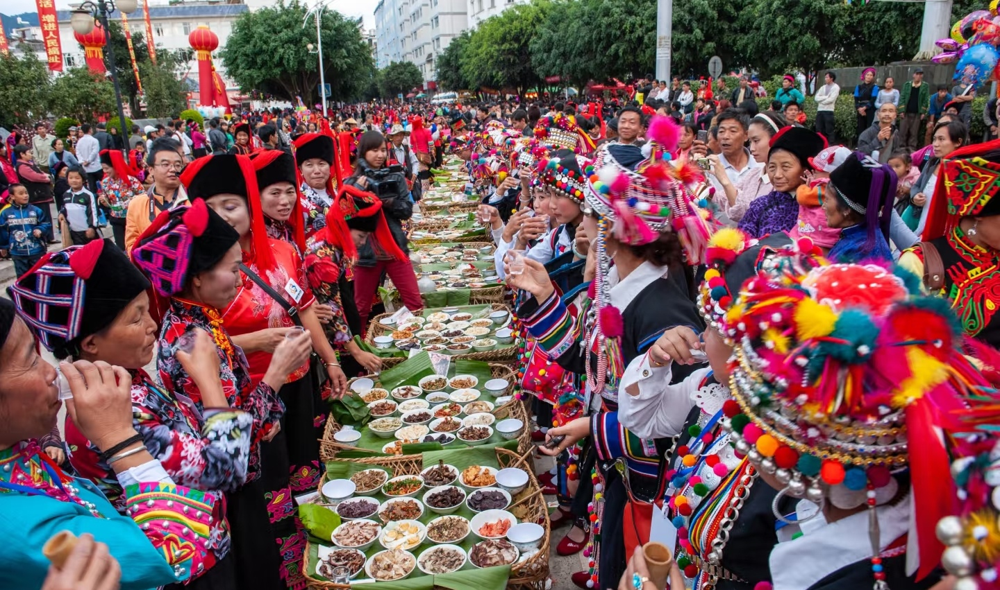
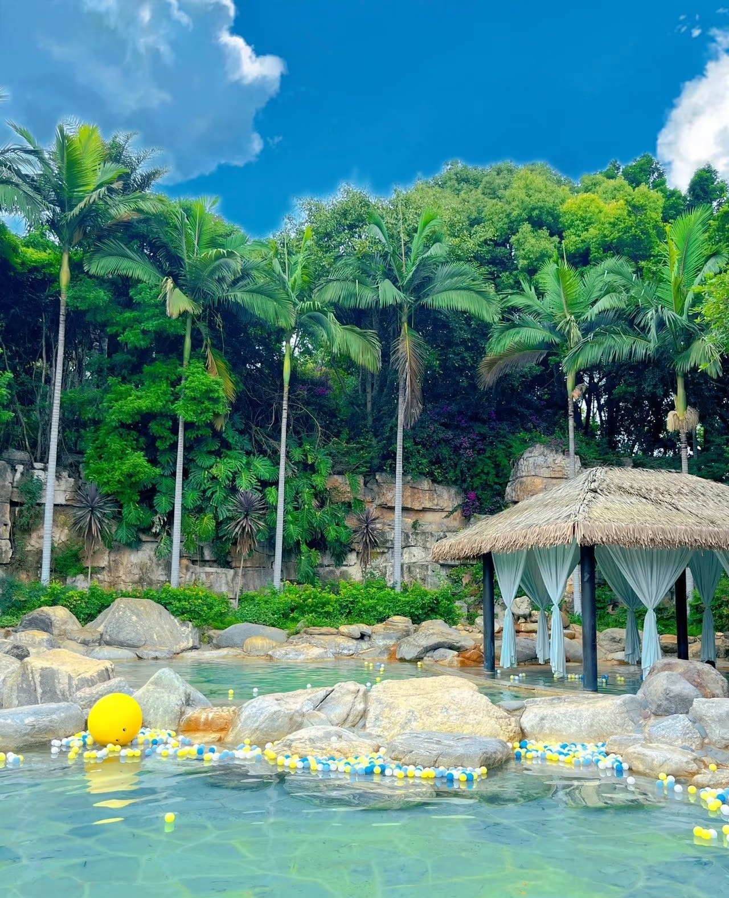
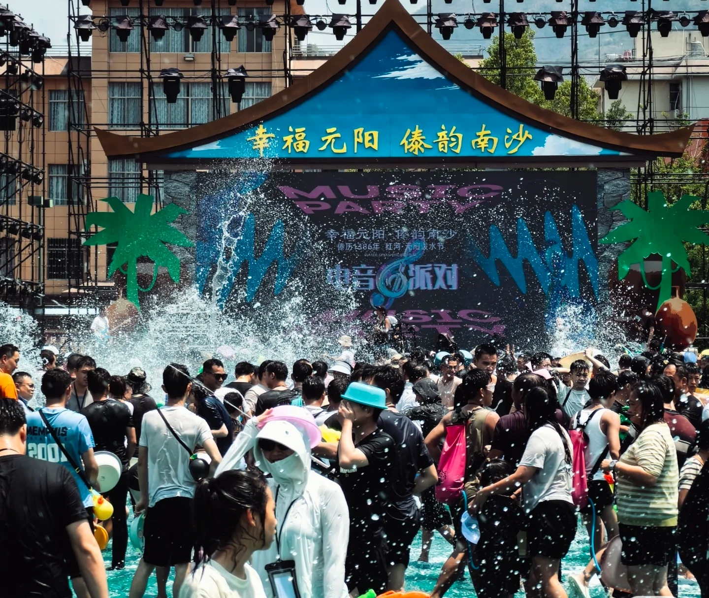

绿春长街宴
绿春长街宴是哈尼族的传统节庆活动之一，每逢重大节日，村民会在街道两旁排上数百米长的宴席，整齐地摆放着丰富的民族美食。从酸辣鱼、糯米饭到各类山野食材，展现哈尼族勤劳与热情好客。游客可在热闹的氛围中与村民同席共食，欣赏原生态歌舞表演，体验地道民族风情。

绿春长街宴是哈尼族的传统节庆活动之一，每逢重大节日，村民会在街道两旁排上数百米长的宴席，整齐地摆放着丰富的民族美食。从酸辣鱼、糯米饭到各类山野食材，展现哈尼族勤劳与热情好客。游客可在热闹的氛围中与村民同席共食，欣赏原生态歌舞表演，体验地道民族风情。

弥勒温泉坐落于云南红河的弥勒市，是一处天然地热资源丰富的康养胜地。这里温泉水质清澈透明，富含多种矿物质，能够舒缓压力、改善皮肤和促进血液循环。温泉度假区设有多种温泉池、SPA理疗室和温泉主题酒店，适合情侣、家庭以及长辈游客享受放松时光。

南沙泼水节是傣族人民庆祝新年最重要的节日活动，时间一般在阳历四月。节日期间，南沙街头热闹非凡，人们身穿节日盛装，互相泼水以示祝福和洗净尘埃。泼水节期间还有傣族风情游行、水灯祈福、民族乐舞、赶摆等活动，极富文化张力，是一次难得的民俗体验之旅。